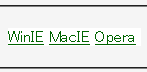

親ブロック要素のtext-alignプロパティにcenter値かright値を設定し、その子要素に背景を設定しさらにインラインボックス化（display:inline;）すると、子要素のボックスがtext-alignプロパティがデフォルト値のときに内容物が表示される位置にまで広がってしまい、前方のリストアイテム要素の内容物の上に覆いかぶさる。
<ul style="text-align:center;"> <li style="display:inline; background:white;"> <a href="../winie.html">WinIE</a></li> <li style="display:inline; background:white;"> <a href="../macie.html">MacIE</a></li> <li style="display:inline; background:white;"> <a href="../opera.html">Opera</a></li> </ul>
バグが発生すると、内容物が「Opera」のli要素の背景が前方のli要素の内容物である「WinIE」と「MacIE」を隠すので、行内で右端にある「Opera」しか表示されません。ただし、内容物が隠れていてもリンクは機能します。
WinIE6.0での表示（標準モード）
以下に挙げたいずれかの方法を採ることでこのバグを回避できます。
MacIE5.1/5.2で不具合の発生が確認されています。